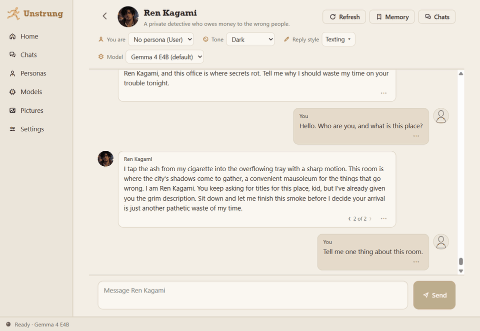

Your characters.
Your computer.
Nothing leaves it.
Unstrung is a Windows app for roleplay chat with AI characters. The AI runs on your own PC, so your stories stay with you. No account, no cloud, no telemetry.
Windows 10 or 11, 64-bit. Free and open source (MIT).

Everything stays on your PC
Unstrung downloads a chat engine and a model once. After that, every reply is written on your computer, with or without internet.
Runs offline
The chat engine and the models run on your PC. The app suggests a model that fits your graphics card, and works without one too.
Characters you shape
Write a character with a picture, a personality and a voice, or import a character card (PNG or JSON) from another app.
A memory you can read
Long chats keep notes: what you came for, the story so far, and facts. You can edit, pin or hide every note.
Tone and reply style
Pick a tone for each chat and how long replies are, from short texts to a page of a novel.
Pictures of the scene
Turn on pictures, and Unstrung paints the current scene on your PC, with your characters' looks.
Try again, go back
Ask for another reply, flip between versions, rewind to an earlier message, or start a branch from any point.
Hard to lose your chats
A copy of your chats each day and before each update. Safe start and Repair if something goes wrong. Export everything to one file.
Adult content, with a hard line
Off at install. You can allow it for 18+ characters and an adult persona. Sexual content with anyone under 18 is always blocked.
A look inside
Real screens from the app. Click a picture to see it full size.

Chat like it is a story
Replies stream in as the model writes them. Above the chat you choose who you are, the tone, the reply style and the model. Every reply has other versions one click away.

It remembers, and shows you what
Older messages leave the model's view in a long chat. The notes stay. You can read them, fix them, or rebuild them from the whole chat.

Build your own cast
Give a character a picture, a personality, a way of talking and a first message. The editor tells you when a card is too long for the model to keep.

Be someone else
A persona is who you are in a chat. Characters see its name, description and looks. Switch persona for each chat.

Models that fit your PC
Unstrung checks your hardware and offers models that run well on it. Each model shows its size and license before you download it.

Your app, your rules
Light, dark or high contrast, larger text, less motion. Choose where your pictures and models live, and turn the update check off if you like.
Private by design
Unstrung goes online for three things only: to download the engines and models from their own projects, and to ask GitHub whether a new version exists. You can turn the update check off.
- No account, no sign in.
- No telemetry and no crash uploads.
- The AI has no tools. It cannot run commands, open files or reach the internet.
- The chat engine listens only on your own PC, on a random port.
- Updates install only when they carry a valid signature, and only when you click Update.
- The code is open, so anyone can check all of this.
Get started
- Download the installer and run it. It installs for your Windows user only and needs no administrator rights.
- Start Unstrung. It asks where to keep your pictures and models, then downloads the chat engine (about 1.6 GB) and one model (3.3 to 6.6 GB).
- Pick a persona or skip that step, then start a chat.
The installer is not signed yet, so Windows SmartScreen can say "Windows protected your PC". To go on, click More info, then Run anyway.
You need
- Windows 10 or 11, 64-bit.
- About 10 GB of free disk space.
- A graphics card is optional. Without one, replies are slower.
Your next story starts on your own PC
Free and open source, under the MIT license.